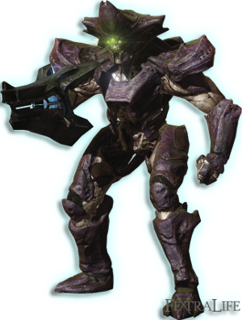

Verity Dissection Simulator
A simulator to help practice dissection in the verity encounter

How to play
The primary objective of this encounter is to swap the shapes of the statues to match the "keys" created by players in the solo room. To do this, you'll need to adjust the 3D shapes of each statue, ensuring that they do not contain the corresponding 2D shape from the callout. To achieve this:
- Defeat Knights: First, you must eliminate knights, which will drop 2D shapes.
- Collect and Interact: Pick up these 2D shapes and interact with a statue to "dissect" it. Depositing a 2D shape onto a statue primes that statue, indicating that its current 2D shape needs to be replaced.
- Shape Swapping: Once you have deposited a 2D shape on one statue, you can then swap it with another statue by depositing a different 2D shape. This process changes the 3D shapes of the two statues, ultimately helping you achieve the correct configuration.
Here are some tips that will help you practice in this simulator
- The reset button doesn't change the callout but resets the statues and knights to the start position
- The randomise button changes the callouts and resets everything
- The letters checkbox allows you to view the callouts as a shape or letter
- Killing the left knight always drops a circle (C)
- Killing the middle knight always drops a triangle (T)
- Killing the right knight always drops a square (S)
- If you pick up a shape, you can see the shape you picked up under "Shape Held"
- To ignore a shape, press the "×"
- To spawn a new set of knight, the unstoppable ogres needs to be killed
- The unstopabble ogres will spawn only when all knights are dead and all shapes have been picked up from the ground or the shapes despawn from the ground
- The status indicates the current status of dissection
Callouts
Statue Shapes
Status IncorrectShape Held
Shapes Dropped
